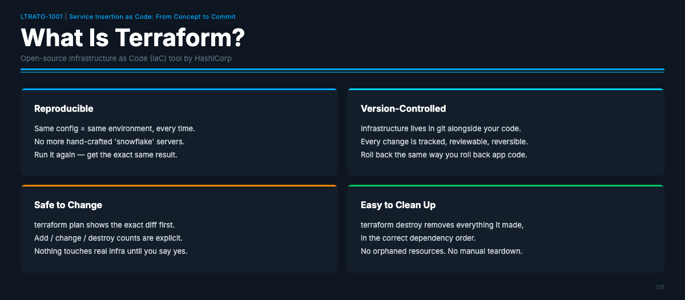
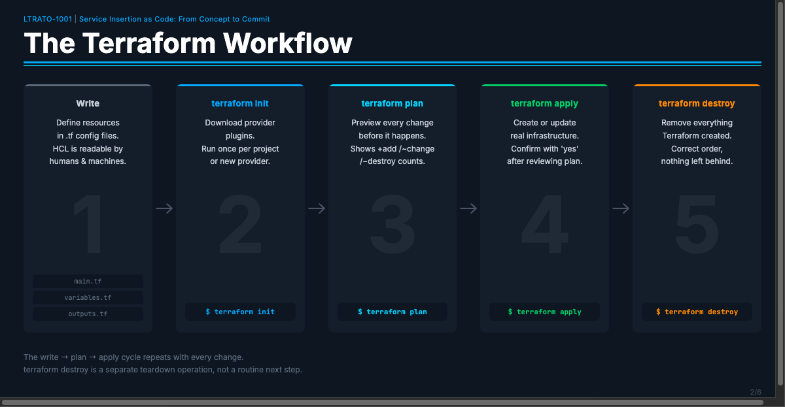
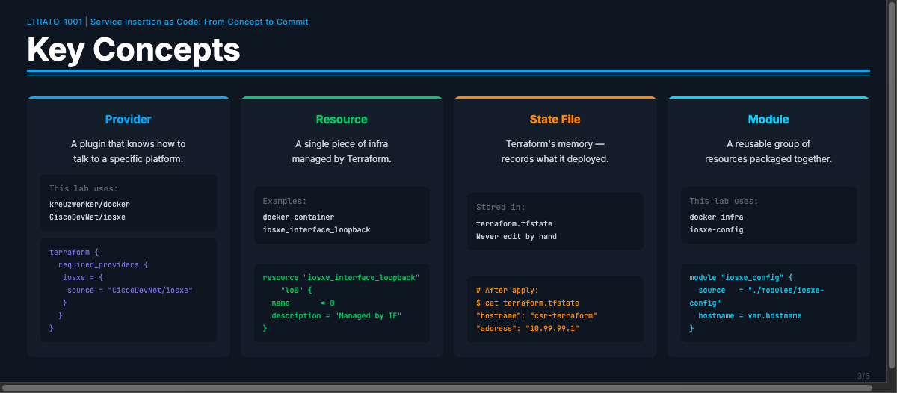

Terraform Lab Guide — LTRATO-1001¶
Infrastructure as Code with Terraform and Cisco IOS XE¶
What Is Terraform?¶

Terraform is an open-source Infrastructure as Code (IaC) tool created by HashiCorp. It lets you define your infrastructure — servers, networks, routers, firewalls, cloud resources — in plain text configuration files, and then deploy, modify, or destroy that infrastructure with a single command.
Why use Terraform instead of doing it manually?¶
| Problem with manual configuration | How Terraform solves it |
|---|---|
| Hard to reproduce — "works on my machine" | The config file is the environment. Anyone with the file gets the same result |
| Easy to forget what you changed | Every change is tracked in code and version-controlled in git |
| Risky to modify — hard to know what will change | terraform plan shows you exactly what will change before you apply anything |
| Hard to clean up — did I delete everything? | terraform destroy removes every resource Terraform created, nothing more, nothing less |
| Snowflake servers — each one slightly different | Idempotent — run apply 10 times, you always end up with the same state |
In a network engineering context, Terraform is increasingly used to:
- Provision virtual routers and network infrastructure (exactly what this lab does)
- Configure network devices via RESTCONF, NETCONF, or APIs
- Manage cloud networking (VPCs, subnets, security groups)
- Orchestrate lab environments for testing and CI/CD pipelines
The Terraform workflow¶

| Step | Command | What it does |
|---|---|---|
| 1 | Write | Define your infrastructure in .tf config files using HCL. Describe what you want — Terraform figures out how to build it. |
| 2 | terraform init |
Downloads and installs the provider plugins your configuration requires. Run once per project, or whenever you add a new provider. |
| 3 | terraform plan |
Compares your config against the current state and previews every change — additions, modifications, and deletions — before anything is touched. |
| 4 | terraform apply |
Executes the plan and creates or updates real infrastructure to match your configuration. Loop back to Write → plan → apply for every subsequent change. |
| — | terraform destroy |
Teardown only — removes every resource Terraform created when you are done with the environment. Not a routine step after every apply. |
The real lifecycle is a loop: Write → plan → apply → Write → plan → apply, repeating with every change.
terraform destroyis a separate decommission operation — not a routine next step after every apply.
| Step | Command | What it does |
|---|---|---|
| 1 | Write | Define your infrastructure in .tf config files using HCL. Describe what you want — Terraform figures out how to build it. |
| 2 | terraform init |
Downloads and installs the provider plugins your configuration requires. Run once per project, or whenever you add a new provider. |
| 3 | terraform plan |
Compares your config against the current state and previews every change — additions, modifications, and deletions — before anything is touched. |
| 4 | terraform apply |
Executes the plan and creates or updates real infrastructure to match your configuration. |
| 5 | terraform destroy |
Removes every resource Terraform created, in the correct dependency order, leaving nothing behind. |
Key rule: always run
terraform planbeforeterraform apply— you see exactly what will change before committing to it.
Key concepts¶

Provider — a plugin that knows how to talk to a specific platform. This lab uses two:
- kreuzwerker/docker — creates Docker containers and networks
- CiscoDevNet/iosxe — configures Cisco IOS XE devices via RESTCONF
Resource — a single piece of infrastructure managed by Terraform (a container, a network, a router interface, a hostname).
State file (terraform.tfstate) — Terraform's memory. It records what it has
deployed so it knows what to add, change, or remove on the next run.
Module — a reusable group of resources. This lab uses two modules:
- docker-infra — handles the Docker network, storage volume, and containers
- iosxe-config — handles IOS XE device configuration via RESTCONF